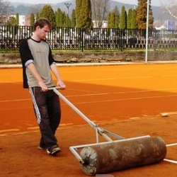

2010
Benet LTC Bytča zorganizoval v sezóne 2010 tri celoštátne turnaje s názvom Benet Cup. Víťazom v kategórii mladších žiakov sa stal domáci Marek Ščamba. Veľký úspech sme zaznamenali v Mini Davis Cupe do 7 rokov. V Slovenskej Ľupči sme sa stali najlepším družstvom v stredoslovenskom regióne.
{kind=link}
{kind=link}
{kind=link}
{kind=link}
2011
V roku 2011 sme boli opäť úspešný v detskej kategórii. Tomáško Bologa a Miško Čurlej vybojovali v Slovenskej Ľupči na Mini Davis Cupe bronzové medaile. V tomto roku sme absolvovali aj ďalšie letné sústredenie na Starej Turej.
{kind=link}
{kind=link}
{kind=link}
{kind=link}
2012
Prvýkrát do súťaže družstiev vstúpili aj muži. V roku 2012 sa ako nováčik predstavili v najnižšej súťaži. V sezóne 2012 sme sa dočkali ďalšieho domáceho víťaza celoštátneho turnaja Benet Cup. Vo vekovej kategórii do 8 rokov sa z prvenstva radoval Miško Čurlej.
{kind=link}
{kind=link}
{kind=link}
{kind=link}
2013
Veľkým úspechom klubu bol postup do celoslovenského finále v súťaži Detský Davis Cup a Fed Cup. Na konci roka sa darilo opäť Miškovi Čurlejovi, ktorý vyhral turnaj v Bratislave.
2014
Rok 2014 sme začali úspešne na turnaji v Púchove. Získali sme víťazstvá vo všetkých vekových kategóriách.
2015
V roku 2015 sa naše družstvá zúčastnili obľúbených detských súťaží Mini Davis Cup a Detský Fed Cup. Klub zorganizoval prvé letné sústredenie v Českej republike na Seči u Chrudimi.
2016
V novovybudovanom tenisovom areáli sa na jar 2016 uskutočnila v poradí tretia tenisová prípravka a 30. augusta zorganizoval náš klub prvý celoštátny turnaj mladších žiakov pod názvom Benet Cup. Turnaja sa zúčastnilo 18 hráčov z celého Slovenska. Víťazom sa stal Radovan Belák z Kysuckého Nového Mesta.